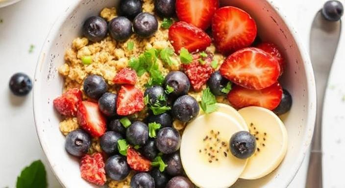

好棒棒健康早餐
A nutritious and delicious breakfast bowl packed with protein and fresh ingredients.
View Recipe從我的日常分享成為你的美味佳餚
A nutritious and delicious breakfast bowl packed with protein and fresh ingredients.
View RecipeThis is my most popular recipe, loved by readers and family alike. It combines fresh ingredients with simple techniques to create something special.